01-scenario
Open full-size SVG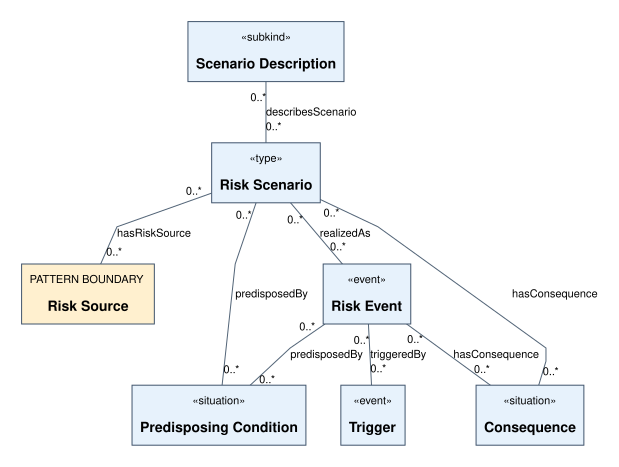
SemRisk ontology documentation · 0.2.0-rc.4 · documentation revision 2026-10-06
Documentation candidate, not a scholarly release or independent validation. OWL sources and governed registries remain authoritative. No manuscript is included.
Fifteen canonical views preserve the registry distinctions. Browser pan/zoom is a navigation aid; the original complete atlas fails 170 mm print readability. Native-editor and complete OntoUML acceptance remain open. These are existing source-bound views, not the unpublished print companion.

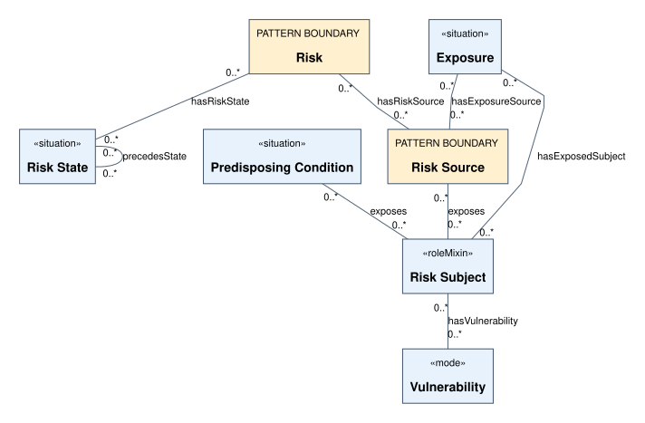
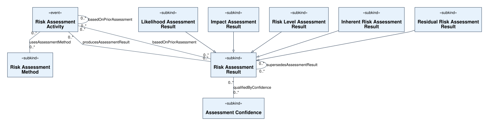
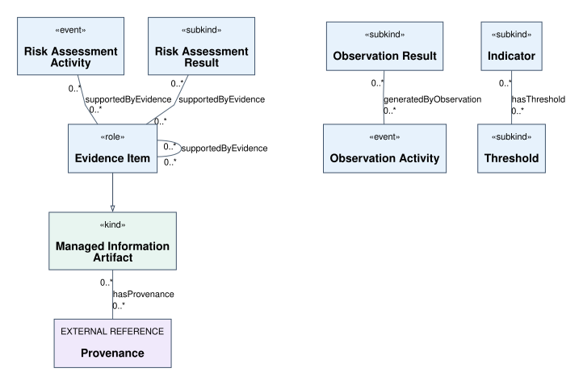
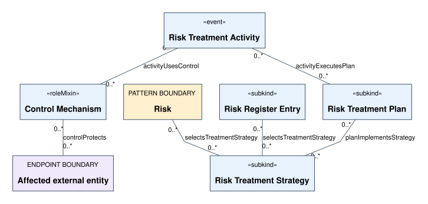
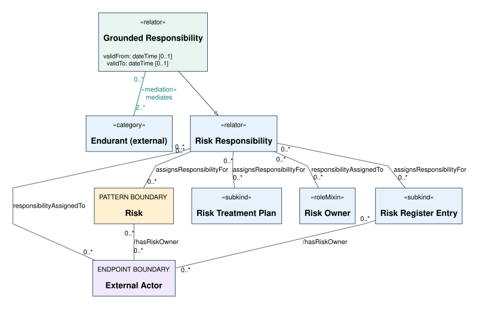
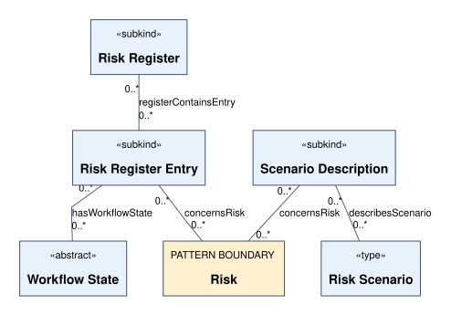
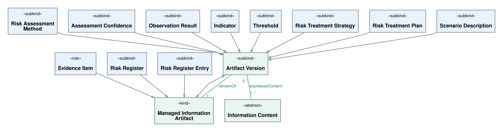
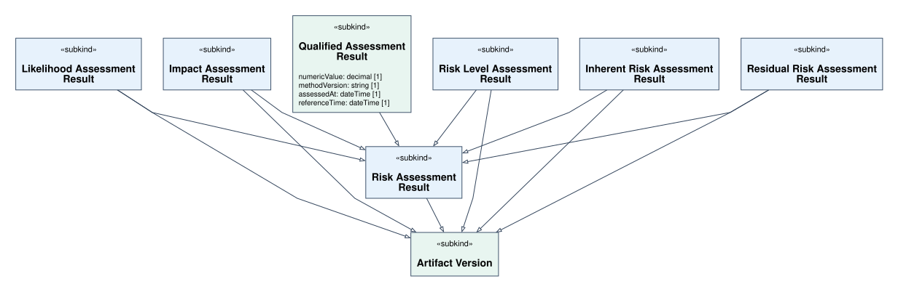
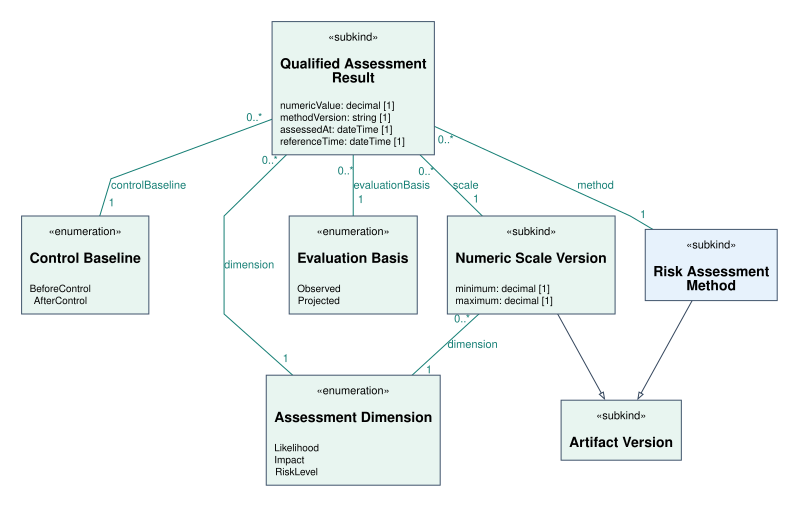
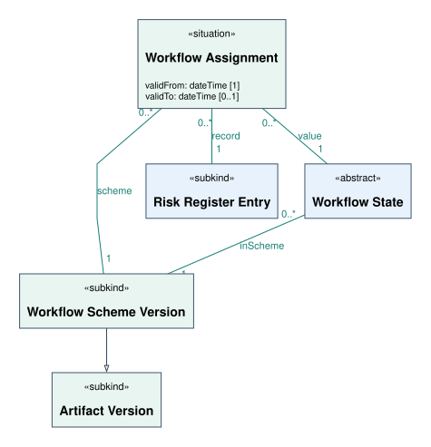
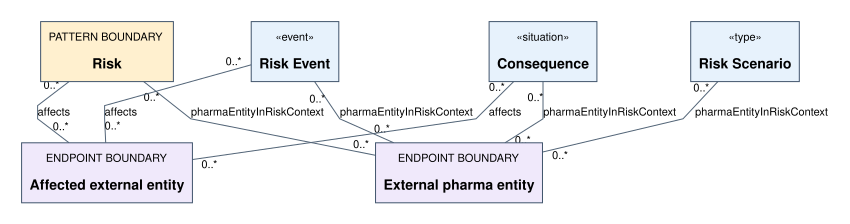
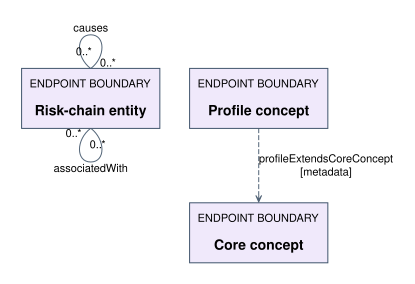
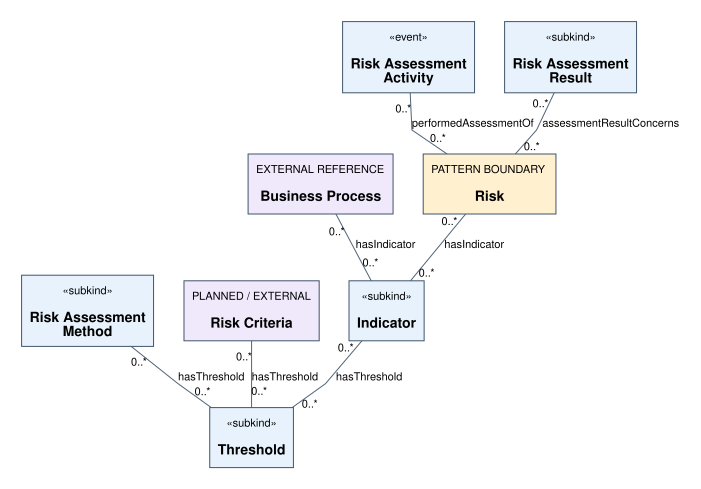
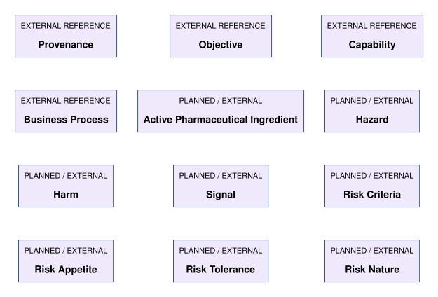